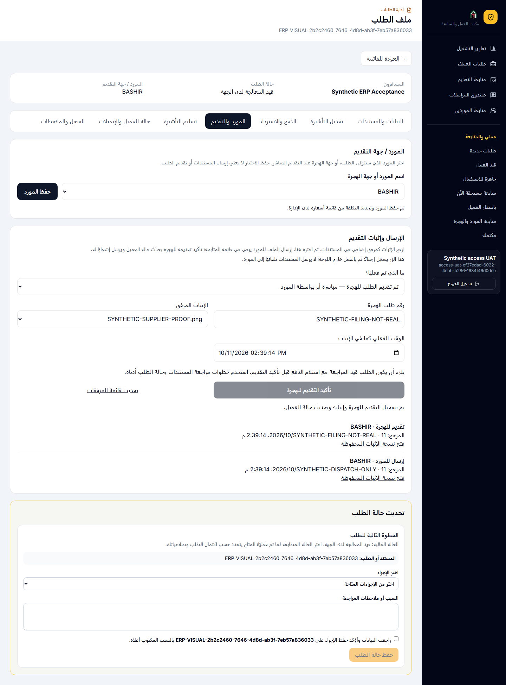
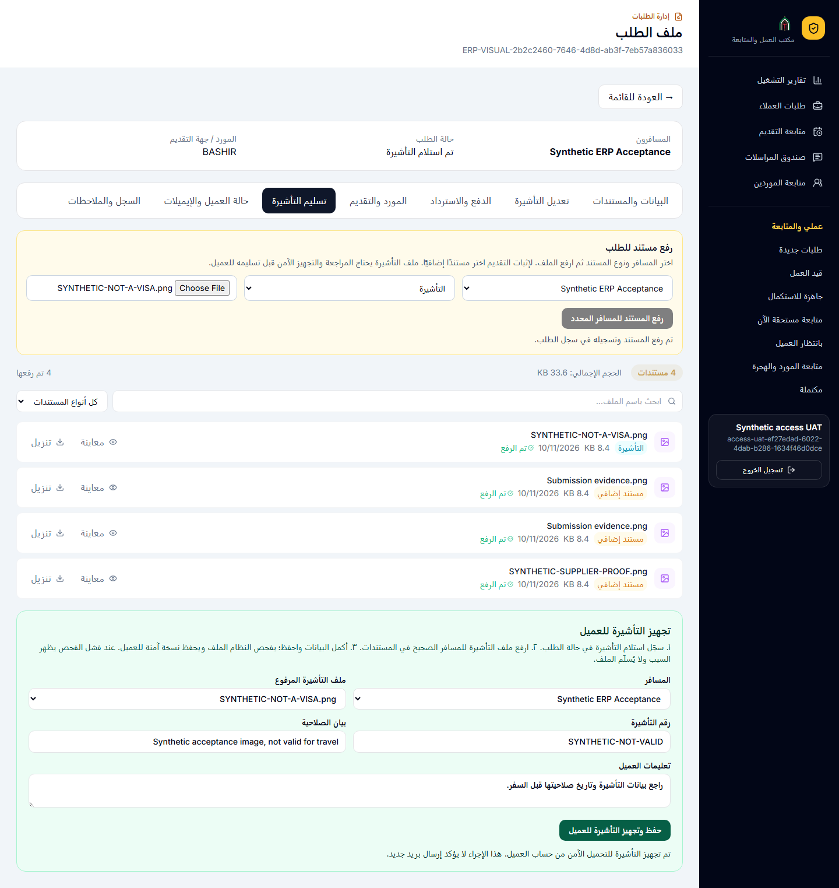
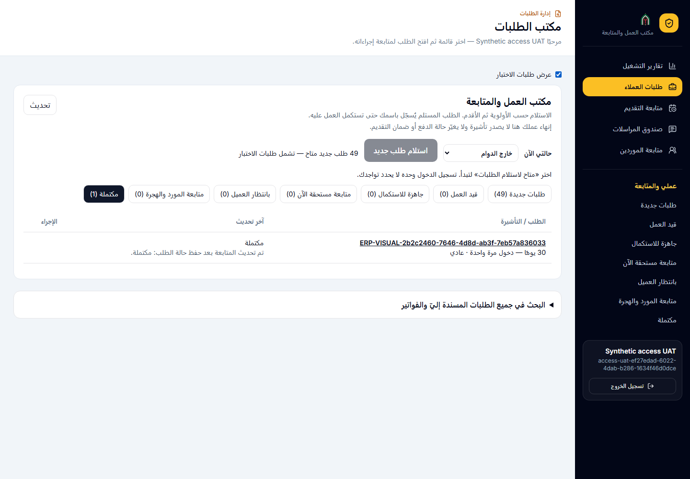
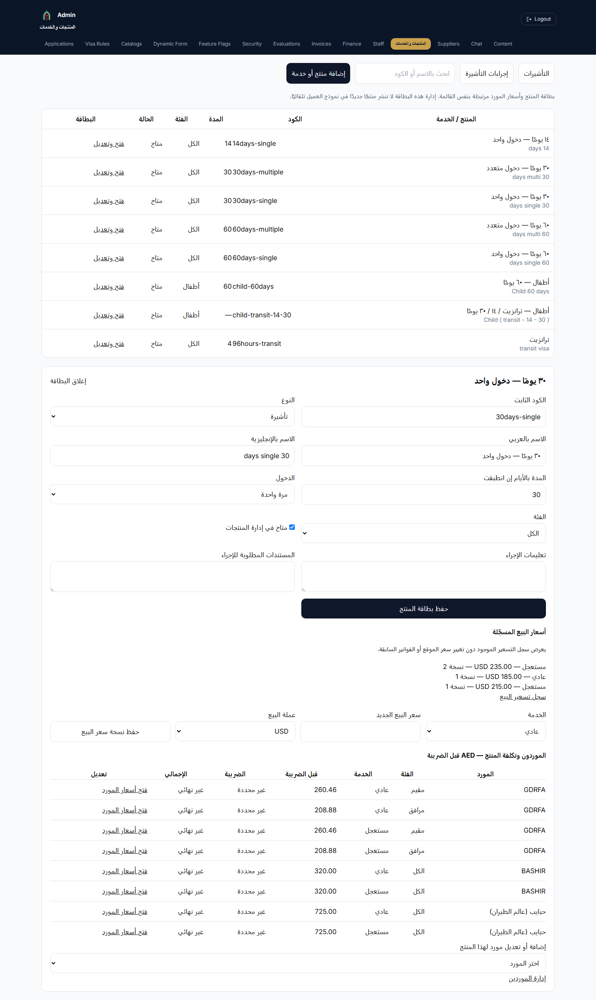
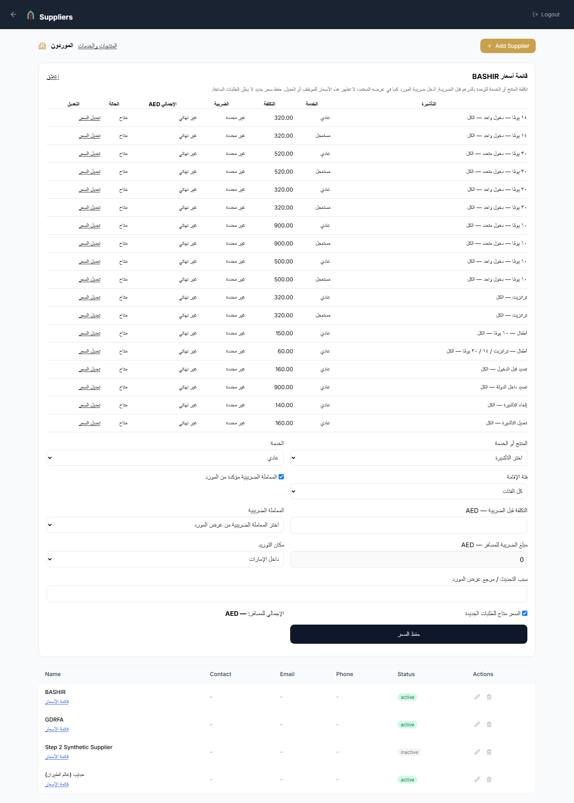

نسخة قبول على staging — ١٢ أكتوبر ٢٠٢٦. الخطوات أدناه مستندة إلى التنفيذ الحالي. نجح اختبار شاشات المنتجات والموردين ومسار إرسال الإثبات والتقديم بحساب موظف تجريبي. نجح أيضًا استلام التأشيرة وفحص الملف وتجهيزه والانتقال لقائمة المكتملة. نجح اختبار طلب عائلي مدفوع في Stripe TEST: تعديل أغلى وفاتورة فرق مستقلة، ثم تعديل أرخص ورد الفرق وإشعار دائن، ثم تشغيل نفس الطلب وتسليم تأشيرتيه تجريبيًا. اختبار التأمين من رابط البريد واعتماد الإنتاج ما زالا مفتوحين. الربط الوارد للبريد وواتساب غير معتمد بعد. لا تستخدم هذه النسخة إعلانًا بجاهزية الإنتاج.
١. بداية يوم الموظف
- افتح دخول الموظف على staging بحسابك الشخصي.
- اختر متاح لاستلام الطلبات. تسجيل الدخول وحده لا يسجّل تواجدك للعمل.
- اضغط استلام طلب جديد. يختار النظام حسب الأولوية ثم الأقدم، ويمنع موظفين من استلام الطلب نفسه.
- إن كان لديك طلب جارٍ، يظهر العودة للطلب الجاري. وقد يظهر استكمال الطلب التالي للمتابعات الجاهزة.
المدير يستطيع متابعة التشغيل، لكن تغيير الإسناد يتم من إجراء الإسناد؛ لا تستخدم حساب زميلك.
٢. أين أجد الطلب؟
طلبات جديدةقيد العملبانتظار العميلمتابعة المورد والهجرةجاهزة للاستكمالمكتملة
لا تعتبر اختفاء صف وحده دليل نجاح. راجع رسالة الحفظ والقائمة الجديدة وسجل الطلب.
٣. تشغيل الطلب من شاشة واحدة
- بيانات الطلب: راجع رقم الطلب، المسافرين، المنتج الحالي، حالة الدفع وملاحظات العميل.
- المستندات: اضغط «فتح ملف المستندات ومراجعته». اختر مستندًا واحدًا، راجعه واحفظ النتيجة، ثم اضغط «إغلاق الملف والعودة للطلب». تظهر آخر مراجعة مسجلة بجانب اسم الملف. اطلب البديل عند الحاجة.
- المورد / جهة التقديم: اختر المورد أو جهة الهجرة، ثم حفظ المورد. اختيار المورد لا يعني إرسال الملفات. الإدارة تضبط سعر المنتج والضريبة؛ الموظف لا يرى التكلفة والربح.
- تأكيد التقديم: من حالة «تم استلام المستندات» ومع وجود دفع مسجّل، اختر جهة التقديم وأرفق الإثبات والمرجع والوقت ثم اضغط زر تأكيد التقديم. الزر نفسه يحدّث الحالة إلى «تم التقديم للهجرة» ويفتح تبويب تسليم التأشيرة انتظارًا للنتيجة؛ لا تغيّر الحالة يدويًا ولا يلزم الانتقال إلى «قيد المراجعة» أولًا. عند التقديم عن طريق المورد حدّد موعد المتابعة أيضًا.
- المتابعة: تابع الطلب حتى قرار الجهة. تغيير المورد أو المنتج بعد الإثبات يحتاج مراجعة؛ لا تنسب إثباتًا قديمًا لجهة أو منتج جديد.
إذا ظهر نقص في سعر المورد، اطلب استكماله من المدير ثم احفظ المورد مجددًا. لا تكتب تكلفة تقديرية بدل السعر المعتمد.
إثبات الإرسال والتقديم — خطوة بخطوة
- من «البيانات والمستندات» افتح «ملف المستندات ومراجعته»، ثم اختر المسافر، ثم نوع «مستند إضافي»، وارفع صورة الإثبات أو PDF. هذا هو مصدر قائمة «الإثبات المرفق».
- افتح «المورد والتقديم»، اختر المورد ثم احفظه. الموظف لا يدخل التكلفة؛ تؤخذ من قائمة الأسعار لدى المدير.
- إذا قدمت عن طريق المورد، اختر «تم التقديم عن طريق المورد — بانتظار النتيجة»، وأدخل مرجع الإرسال ووقته وموعد المتابعة واختر ملف الإثبات.
- عند وجود رقم طلب وإثبات تقديم فعلي، اختر «تم تقديم الطلب للهجرة» وأدخل رقم الهجرة ووقت التقديم واختر الإثبات. يجب أن يكون الطلب مدفوعًا وقيد المراجعة؛ لا يلزم اعتماد مدير إضافي لمجرد تنفيذ هذه الخطوة بحساب الموظف المخوّل.
- بعد التأكيد تصبح الحالة «تم التقديم للهجرة» ويُفتح تبويب «تسليم التأشيرة» تلقائيًا. يظل الطلب في «متابعة المورد والهجرة» انتظارًا للنتيجة. نوع إثبات المورد محفوظ؛ لا يُختلق منه وقت تقديم فعلي في نظام الهجرة.
- إذا وصل رقم وإثبات الهجرة من المورد لاحقًا، ارجع إلى «المورد والتقديم»، واختر التقديم للهجرة ثم «حفظ رقم وإثبات الهجرة من المورد». تبقى الحالة كما هي دون تكرار إشعار العميل؛ يُحفظ الوقت الفعلي من الإثبات.
الزر يسجّل ما حدث بالفعل؛ لا يرسل ملفات إلى المورد تلقائيًا. النظام يحتفظ بنسخة ثابتة من الإثبات في السجل. لا تستخدم جواز العميل كإثبات تقديم.

اختبار موظف على staging ببيانات وهمية للطلب فقط ومورد بشير الحقيقي.٤. تعديل التأشيرة وفرق السعر
- افتح إجراء تعديل التأشيرة وحدد المنتج الجديد والسبب.
- راجع عرض الفرق المحسوب من الخادم وأرسل طلب الموافقة للعميل بالإجراء المتاح لحسابك.
- الأغلى: يدفع العميل الفرق عبر رابط Stripe. بعد تأكيد الدفع تصدر فاتورة مستقلة للفرق؛ لا تُستبدل الفاتورة الأصلية.
- الأرخص: يُرد الفرق وفق مسار الاسترداد المعتمد، ويُسجل إشعار دائن عند تأكيد الاسترداد.
- لا تعتمد سدادًا من صورة أو رسالة؛ تحقق من حالة العملية المؤكدة. الطلب المالي المتعثر يُراجع ويُعاد من إجراء المحاولة نفسه، دون إنشاء عملية مكررة.
طلب التأمين منفصل عن إيراد التأشيرة. يستخدم رابط الدفع ومسار الاسترداد الخاصين به؛ لا تضفه إلى الربح.
٥. رفع التأشيرة والتسليم
هذا التبويب يعرض ملفات التأشيرات فقط. الدفع المسجّل لا يحتاج تأكيدًا جديدًا.
- عند وصول التأشيرة، اختر «تم استلام التأشيرة» في الخطوة التالية للطلب واحفظ. فتح التبويب بعد التقديم لا يعني صدور التأشيرة.
- ارفع التأشيرة تحت المسافر الصحيح؛ في الطلب العائلي يحتاج كل مسافر ملفه.
- راجع البيانات ومحتوى الملف. فحص البرمجيات الضارة لا يتحقق من صحة بيانات التأشيرة.
- يجب أن ينجح الفحص الفني للملف نفسه. عند تعذر الفحص أو فشله لا تعتمد التسليم؛ أعد المحاولة أو ارفع الملف الصحيح.
- استخدم إجراء التسليم. ما يصل للعميل هو النسخة التي اجتازت الفحص والمحفوظة بدليلها، لا ملفًا تبدّل بعدها.
- راجع حالة الطلب وسجل التسليم. رفع ملف وحده لا يعني أن العميل تسلمه، ولا يثبت سداد فاتورة المورد.
التسليم والإغلاق — صور من الاختبار الفعلي
بعد تسجيل استلام التأشيرة، ارفعها للمسافر الصحيح ثم اختر الملف وأكمل رقم التأشيرة وصلاحيتها. نجاح التجهيز يعني أن النسخة الآمنة متاحة للعميل؛ لا يعني وحده وصول إيميل. بعد إكمال العمل احفظ حالة «مكتمل» وتأكد من ظهور الطلب في قائمة المكتملة.


الصور تحتوي بيانات اختبار فقط؛ الملف المصوّر ليس تأشيرة صالحة للسفر.
المنتجات وأسعار الموردين — للمدير
- افتح «المنتجات والخدمات» واختر التأشيرات أو إجراءات التأشيرة.
- اضغط «فتح وتعديل» لعرض البطاقة: الاسم والمدة والفئة وتعليمات الإجراء ومستنداته.
- في جدول الموردين راجع تكلفة المنتج بالدرهم قبل الضريبة، ثم افتح أسعار المورد للتعديل. نفس السعر يظهر في بطاقة المورد أيضًا؛ لا تدخل قائمة ثانية.
- احفظ سبب تغيير السعر. السعر الجديد يخص الاختيارات الجديدة؛ تكلفة الطلب القديم المحفوظة لا تتغير تلقائيًا.
- إذا لم تعرف ضريبة المورد اترك «المعاملة الضريبية مؤكدة» غير محددة. «غير محددة» لا تعني أن المورد معفى أو أن الضريبة صفر.
البيانات المستوردة من الجدول الأساسي: ٨ تأشيرات و٥ إجراءات، و٤٩ سعرًا. الموردون النشطون: GDRFA وبشير وحبايب (عالم الطيران). بطاقة منتج جديدة لا تنشرها تلقائيًا في نموذج العميل.

بطاقة المنتج — صورة فعلية من اختبار staging.
نفس الأسعار داخل بطاقة المورد. المورد التجريبي القديم ظاهر بصفة غير نشط للحفاظ على السجل، ولا يظهر ضمن خيارات الطلبات الجديدة.٦. لوحة المدير والحسابات
- أضف المورد ومنتجاته وأسعاره وضريبته من إعدادات الموردين؛ جهة الهجرة تعامل كجهة تقديم ضمن الموردين.
- راجع عمليات الموردين والإرسال ومرجع التقديم والتأشيرات، ثم بيانات فاتورة المورد وسدادها.
- من تقرير الموظفين افتح تفاصيل الطلبات المغلقة ثم مطابقة حساب الطلب.
- المطابقة تعرض كل دفعة واسترداد، الفاتورة أو الإشعار الدائن، ورسوم وصافي حركة Stripe. لا تجمع عملات مختلفة في رقم واحد.
- المستند المفقود أو المختلف يحتاج مراجعة. صافي Stripe ليس الربح النهائي؛ يلزم توثيق المصروفات الفعلية والتكاليف ومعالجة الضريبة.
- عدد الإغلاقات ينسب لآخر موظف أغلق الطلب مرة واحدة. طلبات TEST مستبعدة افتراضيًا، ووقت بانتظار العميل أو الجهة ليس وقت عمل نشط.
٧. الرد على العميل
- افتح محادثة الطلب المسموح لك بها. محادثة الطلب تتبع الموظف المسؤول عنه عند إعادة الإسناد.
- الملاحظة الداخلية تخص فريق العمل ولا تُرسل إلى العميل.
- اكتب في نص الرد للعميل ثم إرسال الرد بالبريد. الوجهة تؤخذ من بريد الطلب، وليس بريد الاختبار الثابت.
- راقب الحالة: بانتظار الإرسال ← جارٍ الإرسال ← قبله مزود البريد. فشل الإرسال يظهر بوضوح ويحتاج متابعة.
لا تعتمد وصول الردود الواردة أو واتساب داخل اللوحة حاليًا: اتصال صندوق البريد الفعلي وWhatsApp API لم يكتمل. نجاح البريد الصادر لا يثبت الربط الوارد، وSENT لا يثبت وصول الرسالة إلى صندوق الوارد.
٨. اختبار القبول قبل العمل الحقيقي
يُنفذ على طلب تجريبي وبحسابين منفصلين للموظف والمدير، ثم تُسجّل النتيجة والدليل:
- حفظ طلب ناقص واستكماله من الرابط.
- مسافران، وملفات مستقلة، والتحقق من رسائل الأخطاء.
- Stripe TEST: نجاح وفشل وإعادة محاولة، ومطابقة الفاتورة للمبلغ.
- استلام متزامن من موظفين، ثم متابعة ونقل إسناد؛ لا تظهر بيانات طلب غير مسند للموظف.
- اختيار مورد وإرسال الملفات وإثبات التقديم وانتقال القوائم.
- موافقة العميل على تعديل أغلى، دفع الفرق وفاتورته؛ تعديل أرخص واسترداد الفرق وإشعاره الدائن.
- التأمين ودفعه واسترداده منفصلًا.
- رفع تأشيرة كل مسافر، الفحص والتسليم والتنزيل بحساب العميل الصحيح فقط.
- الرسائل الصادرة والواردة وربطها بالمسؤول الصحيح.
- تقرير المدير، وإعادة فتح الطلب دون تكرار الإغلاق أو الربح.
أي بند بلا دليل يبقى مفتوحًا. لا يُستبدل الاختبار المرئي باستجابة HTTP أو نجاح بناء الكود.